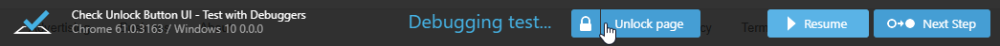

TestCafe v0.18.0 Released: Angular Selectors, Using Multiple Reporters, etc
With this release, we have prepared a bunch of useful things. We have put finishing touches on Angular selectors to let you address page elements on Angular websites using the component tree. We have also made it possible to output reports to multiple channels (like console + file). Read on to learn about more things we have for you.
Enhancements #
⚙ Angular Selectors (testcafe-angular-selectors) #
In addition to AngularJS selectors we shipped earlier, we have prepared selectors for Angular 2+ websites.
They are included in the same testcafe-angular-selectors module.
npm install testcafe-angular-selectors
You can use Angular 2+ selectors as regular TestCafe selectors. When creating such a selector, provide the component name to the AngularSelector constructor. You can pass nested component names as well.
import { AngularSelector } from 'testcafe-angular-selectors';
const listItemComponent = AngularSelector('list list-item');
Note that before starting a test, you need to wait until the component tree is loaded. Use the waitForAngular function for this.
import { AngularSelector, waitForAngular } from 'testcafe-angular-selectors';
fixture `App tests`
.page `http://angular-app-url`
.beforeEach(async () => {
await waitForAngular();
});
test('test', async t => {
const firstListItem = AngularSelector('list list-item');
});
For details, see Angular Selector Extentions.
⚙ Testing in headless Firefox #
In addition to Chrome headless, we have added support for testing in headless Firefox (version 56+).
testcafe firefox:headless tests/sample-fixture.js
runner
.src('tests/sample-fixture.js')
.browsers('firefox:headless')
.run();
⚙ Outputting test results to multiple channels (#1412) #
If you need a report to be printed in the console and saved to a .json file,
you can now do this by specifying multiple reporters when running tests.
testcafe all tests/sample-fixture.js -r spec,json:report.json
const stream = fs.createWriteStream('report.json');
runner
.src('tests/sample-fixture.js')
.browsers('chrome')
.reporter('spec')
.reporter('json', stream)
.run()
.then(failedCount => {
stream.end();
});
⚙ Entering the debug mode when a test fails (#1608) #
TestCafe can now automatically switch to the debug mode whenever a test fails. Test execution will be paused, so that you can explore the tested page to determine the cause of the fail.
To enable this behavior, use the --debug-on-fail flag in the command line or the debugOnFail option in the API.
testcafe chrome tests/fixture.js --debug-on-fail
runner.run({ debugOnFail: true });
⚙ Interacting with the tested page in debug mode (#1848) #
When debugging your tests, you can now interact with the tested page. Click the Unlock page button in the page footer to enable interaction.

After that, you can do anything with the webpage. This gives you additional powers to detect problems in your tests.
Click Resume to continue running the test or click Next Step to step over.
⚙ Chrome and Firefox are opened with clean profiles by default (#1623) #
TestCafe now opens Chrome and Firefox with empty profiles to eliminate the influence of profile settings and extensions on test running.
However, you can return to the previous behavior by using the :userProfile browser option.
testcafe firefox:userProfile tests/test.js
runner
.src('tests/fixture1.js')
.browsers('firefox:userProfile')
.run();
⚙ Customizable timeout to wait for the window.load event (#1645) #
Previously, TestCafe started a test when the DOMContentLoaded event was raised. However, there are many pages that execute some kind of initialization code on the window.load event (which is raised after DOMContentLoaded because it waits for all stylesheets, images and subframes to load). In this instance, you need to wait for the window.load event to fire before running tests.
With this release, TestCafe waits for the window.load event for 3 seconds.
We have also added a pageLoadTimeout setting that allows you to customize this interval.
You can set it to 0 to skip waiting for window.load.
The following examples show how to use the pageLoadTimeout setting from the command line and API.
testcafe chrome test.js --page-load-timeout 0
runner.run({
pageLoadTimeout: 0
});
You can also use the setPageLoadTimeout method in test API to set the timeout for an individual test.
fixture `Page load timeout`
.page `http://devexpress.github.io/testcafe/example/`;
test(`Page load timeout`, async t => {
await t
.setPageLoadTimeout(0)
.navigateTo('http://devexpress.github.io/testcafe/');
});
⚙ Access messages output by the tested app to the browser console (#1738) #
You can now obtain messages that the tested app outputs to the browser console. This is useful if your application or the framework it uses posts errors, warnings or other informative messages into the console.
Use the t.getBrowserConsoleMessages method that returns the following object.
{
error: ["Cannot access the 'db' database. Wrong credentials.", '...'], // error messages
warn: ['The setTimeout property is deprecated', '...'], // warning messages
log: ['[09:12:08] Logged in', '[09:25:43] Changes saved', '...'], // log messages
info: ['The application was updated since your last visit.', '...'] // info messages
}
Note that this method returns only messages posted via the console.error, console.warn, console.log and console.info methods. Messages output by the browser (like when an unhandled exception occurs on the page) will not be returned.
For instance, consider the React's typechecking feature, PropTypes. You can use it to check that you assign valid values to the component's props. If a PropTypes rule is violated, React posts an error into the JavaScript console.
The following example shows how to check the React prop types for errors using the t.getBrowserConsoleMessages method.
// check-prop-types.js
import { t } from 'testcafe';
export default async function () {
const { error } = await t.getBrowserConsoleMessages();
await t.expect(error[0]).notOk();
}
// test.js
import { Selector } from 'testcafe';
import checkPropTypes from './check-prop-types';
fixture `react example`
.page `http://localhost:8080/` // https://github.com/mzabriskie/react-example
.afterEach(() => checkPropTypes());
test('test', async t => {
await t
.typeText(Selector('.form-control'), 'devexpress')
.click(Selector('button').withText('Go'))
.click(Selector('h4').withText('Organizations'));
});
⚙ Defining drag end point on the destination element (#982) #
The t.dragToElement action can now drop a dragged element at any point inside the destination element.
You can specify the target point using the destinationOffsetX and destinationOffsetY options.
import { Selector } from 'testcafe';
const fileIcon = Selector('.file-icon');
const directoryPane = Selector('.directory');
fixture `My Fixture`
.page `https://example.com/`;
test('My Test', async t => {
await t
.dragToElement(fileIcon, directoryPane, {
offsetX: 10,
offsetY: 10,
destinationOffsetX: 100,
destinationOffsetY: 50,
modifiers: {
shift: true
}
});
});
⚙ TestCafe exits gracefully when the process is interrupted (#1378) #
Previously, TestCafe left browsers open when you exited the process by pressing Ctrl+C in the terminal.
Now TestCafe exits gracefully closing all browsers opened for testing.
Bug Fixes #
- Tests no longer hang in Nightmare (#1493)
- The
focusevent is now raised when clicking links withtabIndex="0"(#1803) - Headless Chrome processes no longer hang after test runs (#1826)
setFilesToUploadno longer throws aRangeErroron websites that use Angular (#1731)- Fixed a bug where an
iframegot wrong origin (#1753) document.opennow doesn't throw an error ifdocument.defaultViewisnull(testcafe-hammerhead/#1272)- No error is thrown when the handler passed to
addEventListenerisundefined(testcafe-hammerhead/#1251) - An error is no longer raised if the processed element is not extendible (testcafe-hammerhead/#1300)
- Fixed a bug where an
onclickhandler did not work after click on aSubmitbutton (testcafe-hammerhead/#1291) - Images with
style = background-image: url("img.png");are now loaded correctly (testcafe-hammerhead/#1212) - Documents can now contain two
ShadowUIroots (testcafe-hammerhead/#1246) - HTML in an overridden
document.writefunction is now processed correctly (testcafe-hammerhead/#1311) - Elements processing now works for a
documentFragmentas it is added to the DOM (testcafe-hammerhead/#1334)